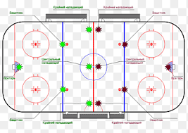

1-.El juego comienza en el círculo central con un cara a cara. Es cuando el árbitro deja caer el disco entre dos jugadores contrarios que luego luchan por la posición de su equipo. Un cara a cara también puede utilizarse para reanudar el juego después de una interrupción en cualquiera de las zonas de cara a cara de los jugadores ofensivos o defensivos.
2-.Los jugadores pueden utilizar la fuerza física para ganar el disco a su oponente. El control del cuerpo puede ser utilizado pero no está prohibido en la espalda o por encima de la altura del hombro.
3-.Los jugadores acusados de una sanción leve recibirán la orden de abandonar el hielo durante dos minutos y su equipo jugará con 5 jugadores durante ese tiempo. Si el equipo contrario marca un gol en esos dos minutos, ese jugador podrá volver al hielo inmediatamente.
4-.Una sanción menor puede incluir una zancadilla a un adversario con el stick, un agarre con el stick o las manos, un enganche con el stick o un control corporal a un jugador sin el disco.
5-.Las sanciones graves supondrán la retirada del jugador del hielo durante un máximo de 5 minutos. Estas pueden incluir peleas, infligir lesiones graves a los jugadores contrarios o continuas infracciones menores

6-.En el hockey gana quien más goles meta
7-.El hockey sobre hielo se disputa en tres tiempos de 15 minutos cada uno.
8-.Se juega con un disco llamado puck.
9-. Cada equipo está conformado por cinco jugadores en campo y un portero.
10-.Si el partido termina en empate, se define en shootouts.

11-.El juego se divide en dos períodos.
12-.Cada uno de estos tiempos tiene 35 minutos.
13-.Cada equipo está conformado por cinco jugadores en campo y un portero.
14-.Se juega con un disco llamado puck.
15-.Si el partido termina en empate, se define en shootouts.